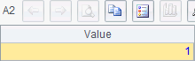
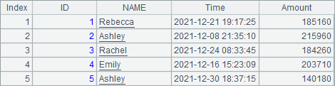
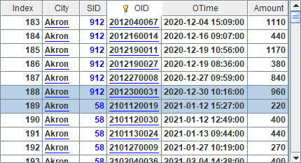

12.7.5 Other properties
The column element also has special properties: Convex edge and Data3.
Default value of Convex edge property is false; if it is set as true, then the column chart will be plotted with convex edges. Usually this property is used for columns with pure fill colors. Below is a sample plotting algorithm:
|
|
A |
|
1 |
=canvas() |
|
2 |
=demo.query("select * from GYMSCORE") |
|
3 |
=A1.plot("BackGround") |
|
4 |
=A1.plot("EnumAxis","name":"x") |
|
5 |
=A1.plot("NumericAxis","name":"y","location":2) |
|
6 |
=A1.plot("Column","fillColor":[["ChartColor",0,false,-39271,-1,0],["ChartColor",0, false,-13210,-1,0],["ChartColor",0,false,-6697984,-1,0]],"axis1":"x","data1": A2.(EVENT+","+NAME),"axis2":"y","data2":A2.(SCORE)) |
|
7 |
=A1.draw@p(450,200) |
Set fill color property for the column chart in A6:

Note: Her gradient color isn¡¯t used. This is unlike the setting when discussing the appearance properties of the column element. First let¡¯s look at the case without setting the convex edge, as A7¡¯s plotting result shows:

Then modify the chart properties of the column element by editing A6¡¯s parameters:

And get the following plotting result:

It can be seen that the columns have got the convex edges. The Convex edge property applies in the 3D column chart as well, while it is invalid for a cylinder chart.
As mentioned in the first section, you just need to define one pair of coordinates to position a column and to plot the whole column chart automatically according to the height of the numeric axis. Columns will be plotted starting from the x-axis to the positions specified by the coordinates. If you want to plot columns from a non-default point, set Data3 to change the start position.
Go on to modify the column element properties by editing A6¡¯s code:

One point to note when setting Data3: The logical axis on which the data depends is the data property Axis 2. Its setting requires a sequence with the same length as in the setting of other data properties. Because the value of Data3 in the above is set as 10 for each column, columns will be plotted from the position whose numeric value on y-axis is 10, rather than from the x-axis. Thus the plotting result of A7 is:

By setting Data3, you can plot charts with special requirements, displaying the opening prices and closing prices of stocks in a stock chart, for example.